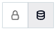

Amazon Redshift OCF Connector: Install and Configure¶
Alation Cloud Service Applies to Alation Cloud Service instances of Alation
Customer Managed Applies to customer-managed instances of Alation
Firewall Configuration¶
Open inbound TCP port 5439 on Redshift to receive requests from Alation.
Authentication¶
The OCF connector for Amazon Redshift supports several authentication methods for metadata extraction, sampling and profiling, and query log ingestion:
In addition to basic and STS authentication, Compose supports SSO authentication through an identity provider registered in AWS IAM. See Compose below.
Basic Authentication¶
Basic authentication requires a service account on the Redshift database.
To connect with basic authentication, create a user account for Alation and grant it the required permissions.
Service Account¶
Sample SQL to Create an Account¶
CREATE USER alation WITH PASSWORD 'password';
Permissions for Metadata Extraction¶
GRANT USAGE ON SCHEMA pg_catalog TO alation;
GRANT SELECT ON ALL TABLES IN SCHEMA pg_catalog TO alation;
Permission |
Purpose |
|---|---|
|
Required for table and view extraction. |
|
Required for table, view, function, and function definition extraction. |
Permissions for Table Profiling¶
GRANT SELECT ON schema_name.table_name TO alation;
Permissions for Query Log Ingestion¶
GRANT SELECT ON <qli_schema_name>.<qli_table_name> TO alation;
STS Authentication with an AWS IAM User¶
You can choose to authenticate through the STS service and an AWS IAM user.
To set up STS authentication with an AWS IAM user:
In AWS IAM, create a user.
Write down the access key, secret access key, and the user ARN of the user.
Create an IAM policy (for example,
<read_resources_policy>) that grants access to the AWS resources you are going to catalog. For an Amazon Redshift data source, we recommend granting the SELECT privileges on schemas and tables you wish to catalog, as well as on a number of system tables. See Service Account for information on what permissions are required.Note
You can use an existing policy that fulfills these access requirements.
Create an IAM role (for example,
<read_resources_role>) selecting the Type of Trusted Entity to be AWS Service and Use Case to be EC2. To this role, attach the policy you created in step 3 above (<read_resources_policy>) or an existing policy that fulfills the requirements for MDE, profiling, and QLI. This role will be assumed by Alation when performing MDE, profiling, and QLI from your Amazon Redshift data source.Save the ARN of the role (
<read_resources_role>). It will be required for the next configuration steps in AWS and later during the configuration in Alation.Create an IAM policy (for example,
<assume_role_policy>) that allows theAssumeRoleaction for the IAM role created in step 4. When creating this policy:Select STS as Service.
Under Actions > Access Level > Write, select AssumeRole.
Under Resources, specify the ARN of the role that gives access to the AWS resources (your
<read_resources_role> created in step 4).
Open the properties page of your
<read_resources_role>role. Edit the Trust Relationship of this role by adding your user ARN.
When configuring your Amazon Redshift data source in Alation, you will need to specify:
AWS access key ID of the IAM user
AWS access key secret
ARN of your
<read_resources_role>role.
Have this information available when performing the configuration on the Alation side.
STS Authentication with an AWS IAM Role¶
This type of authentication can be used to authenticate across two AWS accounts when the Alation instance runs on EC2 under one account and the Amazon Redshift cluster runs under the other.STS Authentication with the AWS IAM role is available for both on-premise and Alation Cloud Service instances from connector version 1.3.2.6521.
To configure STS authentication with an AWS IAM role, use the steps in Configure Authentication via AWS STS and an IAM Role. To provide access to Redshift, create policies that provide a level of access similar to the Service Account permissions.
JDBC URI¶
The format of the JDBC URI depends on your authentication method.
URI for Basic Authentication¶
Format¶
When building the URI, include the following components:
Hostname or IP of the instance
Port number
Database name
redshift://<hostname_or_ip>:<port>/<database_name>
Example¶
redshift://redshift-alation-se.ct5o26v.us-east-5.redshift.amazonaws.com:5439/dev
URI for STS Authentication¶
Format¶
redshift:iam://<hostname_or_ip>:<port>/<database_name>?tcpKeepAlive=true&ssl=true&AutoCreate=true
Example¶
redshift:iam://redshift-alation-se.ct5o26v.us-east-5.redshift.amazonaws.com:5439/test_db_01?tcpKeepAlive=true&ssl=true&AutoCreate=true
URI for STS Authentication With Zeus¶
Format¶
redshift:iam://<hostname_or_ip>:<port>/<database_name>?ClientID=<Value>&Region=<Value>
Example¶
redshift:iam://eng-qa-redshift-nlb-adc13e6232ccee56.elb.us-east-1.amazonaws.com:5439/test_alation_database_01?ClusterID=redshift-cluster-private&Region=us-east-1
Install the Connector¶
Important
Installation of the Amazon Redshift OCF connector requires the Alation Connector Manager to be installed as a prerequisite.
If this has not been done on your instance, install the Connector Manager: Install Alation Connector Manager.
Make sure that the connector Zip file which you received from Alation is available on your local machine.
Install the connector on the Connectors Dashboard page. Refer to Manage Connector Dashboard.
Create and Configure a New Data Source¶
Log in to the Alation instance and add a new source. Click on Apps > Sources > Add > Data Source.
Provide the Title for data source and click on Continue Setup.
From the Database Type dropdown, select Redshift OCF Connector. You will be navigated to the Settings page of your new data source.
{kind=link}
Access¶
On the Access tab, set the data source visibility using these options:
Public Data Source—The data source will be visible to all users of the catalog.
Private Data Source—The data source will be visible to the users allowed access to the data source by Data Source Admins.
You can add new Data Source Admin users in the Data Source Admins section.
General Settings¶
Note
This section describes configuring settings for credentials and connection information stored in the Alation database. If your organization has configured Azure KeyVault or AWS Secrets Manager to hold such information, the user interface for the General Settings page will change to include the following icons to the right of most options:

By default, the database icon is selected, as shown. In the vault case, instead of the actual credential information, you enter the ID of the secret. See Configure Secrets for OCF Connector Settings for details.
Perform the configuration on the General Settings tab.
Application Settings¶
Specify Application Settings if applicable. Click Save to save the changes after providing the information.
Parameter |
Description |
|---|---|
BI Connection Info |
This parameter is used to generate lineage between the current data source and another source in the catalog, for example a BI source that retrieves data from the underlying database. The parameter accepts host and port information of the corresponding BI data source connection. Use the following format: You can provide multiple values as a comma-separated list:
Find more details in BI Connection Info. |
Disable Automatic Lineage Generation |
Select this checkbox to disable automatic lineage generation from QLI, MDE, and Compose queries. By default, automatic lineage generation is enabled. |
Connector Settings¶
Under the Connector Settings section of the General Settings tab, populate the data source connection information and save the values by clicking Save.
Parameter |
Description |
|---|---|
Basic Authentication |
Default. Leave this radio button selected if you are going to authenticate with basic authentication. |
STS Authentication |
Select this radio button if you are going to configure STS Authentication with an IAM User |
JDBC URI |
Specify the JDBC UI in the required format. Refer to JDBC URI for examples. |
Important
If you are going to Configure STS Authentication with an AWS IAM Role, disregard the Basic Authentication and STS Authentication radio buttons. They will not apply. Only provide a valid JDBC URI.
Configure Basic Authentication¶
If you selected the Basic Authentication radio button, specify the information in the Basic Authentication section. Save the values by clicking Save.
Refer to Basic Authentication for more information about this authentication method.
Parameter
Description
Username
Specify the service account username.
Password
Specify the service account password.
Enable SSL
Enable or disable SSL authentication by selecting or clearing the Enable SSL checkbox.
If the Enable SSL checkbox is enabled, upload the SSL certificate using the upload link below.
Truststore Password
Provide the password for the SSL certificate.
Note
The password will be deleted if the data source connection is deleted.
Configure STS Authentication¶
If you selected the STS Authentication radio button, specify the information in the STS Authentication section. Save the values by clicking Save.
Refer to STS Authentication with an IAM User for more information about this authentication method.
Parameter
Description
Region-Specific Endpoint
Select this checkbox if you prefer to use the STS endpoint specific to your AWS region. The regional endpoint has to be active under your AWS account. Leave this checkbox clear to use the global endpoint.
Region
Specify your AWS region.
DB username
Specify the user name to use to log in to the cluster database.
STS: AWS Access Key ID
If you are authenticating with an AWS user, specify the access key ID of the service account.
STS: AWS Access Key Secret
If you are authenticating with an AWS user, specify the access key secret of the service account.
Role ARN
Specify the ARN of the role you created following the steps in STS Authentication with an AWS IAM User
STS Duration
Specify the STS duration value, in seconds. The default value is 3600 seconds.
Configure STS Authentication with an AWS IAM Role¶
To use STS authentication with an AWS IAM role, specify the information in the IAM Role Authentication section of General Settings. Save the values by clicking Save.
Parameter
Description
Auth Type
Select AWS IAM.
Authentication Profile
Select the authentication profile you created in Admin Settings.
Role ARN
Provide the ARN of the role that gives access to the Amazon resource.
External ID
Provide the External ID you added to the role that gives access to the Amazon resource.
STS Duration
Provide the STS token duration in seconds. This value must be less than or equal to the Maximum session duration of the IAM role that provides access to the Amazon resource(s).
Logging Configuration¶
Select the logging level for the connector logs and save the values by clicking Save in this section. The available log levels are based on the Log4j framework.
Parameter |
Description |
|---|---|
Log level |
Select the log level to generate logs. The available options are INFO, DEBUG, WARN, TRACE, ERROR, FATAL, ALL. |
Obfuscate Literals¶
Obfuscate Literals—Enable this toggle to hide the details of the queries in the catalog page that are ingested via QLI or executed in Compose. This toggle is disabled by default.
Test Connection¶
After specifying the connector settings, under Test Connection, click Test to validate network connectivity.
Add-On OCF Connector for dbt¶
The dbt connector can be used as an add-on with another OCF connector to extract and catalog descriptions and lineage from dbt models, sources, and columns in dbt Core or dbt Cloud. See Add-On OCF Connector for dbt on how to use this connector.
Metadata Extraction¶
You can configure metadata extraction (MDE) for an OCF data source on the Metadata Extraction tab of the Settings page. Refer to Configure Metadata Extraction for OCF Data Sources for information about the available configuration options.
The default queries that the connector uses to extract metadata can be found in Extraction Queries for Amazon Redshift. You can customize these queries to adjust the extraction to your needs.
Compose¶
The Amazon Redshift data source supports SSO authentication: SSO Authentication for Amazon Redshift Data Source.
For details about configuring the Compose tab of the Settings, refer to Configure Compose for OCF Data Sources.
Data Sampling¶
Sampling and Profiling¶
For Amazon Redshift, Alation supports a number of ways to retrieve data samples and column profiles. For general information about sampling and profiling, see Configure Sampling and Profiling for OCF Data Sources.
Column Profiling¶
The default queries for column profiling can be modified on the Custom Settings tab of the Settings page. Do not use fully qualified table names in custom profiling queries for Amazon Redshift. The following query template can be used to create a custom query:
Numeric columns:
SELECT MIN({column_name}) AS MIN, MAX({column_name}) AS MAX, AVG({column_name}) AS MEAN, (COUNT(*) - COUNT({column_name})) AS "#NULL", (CASE WHEN COUNT(*) > 0 THEN ((COUNT(*) - COUNT({column_name})) * 100.0 / COUNT(*)) ELSE 0.0 END) AS "%NULL" FROM {table_name};
Non-numeric columns:
SELECT ((SUM(CASE WHEN {column_name} IS NULL THEN 1 ELSE 0 END))) AS "#NULL", (CASE WHEN COUNT(*) > 0 THEN ((((SUM(CASE WHEN {column_name} IS NULL THEN 1 ELSE 0 END))) * 100.0 / count(*)) ) ELSE 0.0 END ) AS "%NULL" FROM {table_name};
Query Log Ingestion¶
You can either create a table for Alation to pull the query logs from or use a custom query to query the logs from the Amazon Redshift data source.
Before performing query log ingestion (QLI), perform the QLI setup. Refer to Redshift QLI Setup.
Note
Alation doesn’t ingest query statements with more than 100,000 characters. If the character count of a query exceeds this limit, the query string will be automatically truncated to 100,000 characters before it is ingested into the catalog.
Connector Settings¶
Table-Based QLI¶
In the Table Name field, provide the name of the table in which the query logs are available. The table name must be provided in the following format: database.table.
Custom Query-Based QLI¶
When you cannot create a table or view, you can use a Custom QLI Query to perform QLI. Provide the expected query structure as shown below and click Save:
SELECT
user_name AS username,
to_char(start_time, 'YYYY-MM-DD HH:MI:SS.US') AS startTime,
text AS queryString,
session_id AS sessionId,
seconds_taken AS seconds,
'false' AS cancelled,
default_database AS defaultDatabases,
split_part(session_id, '/', 2) AS sessionStartTime,
seq
FROM
public.alation_qlog
WHERE
starttime BETWEEN STARTTIME AND ENDTIME
AND queryString IS NOT NULL
AND queryString <> ''
AND username != 'rdsdb'
ORDER BY startTime, username, seq;
Automated and Manual Query Log Ingestion¶
Note
When you upgrade to the connector version 1.7.0, update the QLI query to include STARTTIME and ENDTIME to avoid QLI query failure.
You can either perform QLI manually on demand or enable automated QLI:
To perform manual QLI, under the Automated and Manual Query Log Ingestion section of the Query Log Ingestion tab, ensure that the Enable Automated Query Log Ingestion toggle is disabled.
Note
Metadata extraction must be completed first before running QLI.
Click Preview to get a sample of the query history data to be ingested.
Click the Import button to perform QLI on demand.
To schedule QLI, enable the Enable Automated Query Log Ingestion toggle.
Set a schedule under Automated Query Log Ingestion Time by specifying values in the week, day, and time fields. The next QLI job will run on the schedule you have specified.
Note
The hourly schedule for automated QLI is not supported.
Troubleshooting¶
Refer to Troubleshooting.